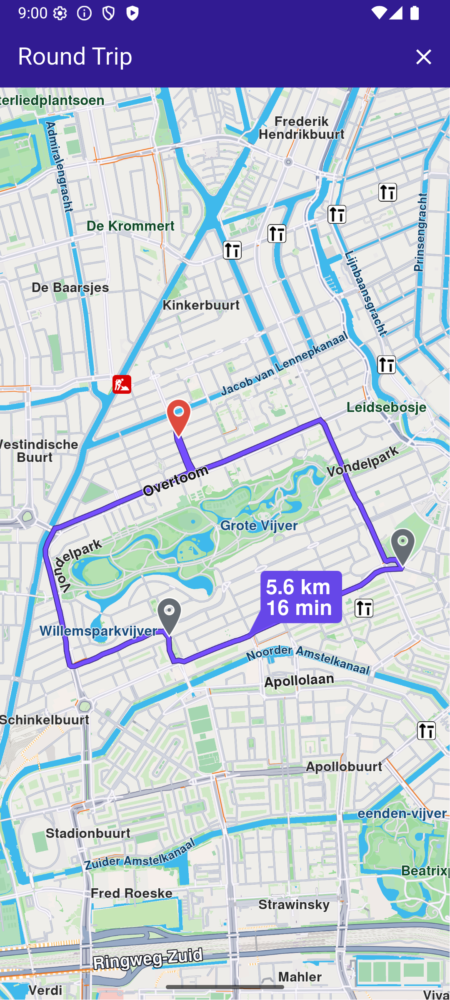

Handling Route Preferences¶
This guide explains how to customize routes using preferences, configure vehicle profiles, and apply routing constraints for different transport modes.
Configure Route Preferences¶
Set route options using RoutePreferences to customize route calculations.
Generic route options:¶
| Preference | Explanation | Default Value |
|---|---|---|
accurateTrackMatch |
Enables accurate track matching for routes. | true |
allowOnlineCalculation |
Allows online calculations. | true |
alternativeRoutesBalancedSorting |
Balances sorting of alternative routes. | true |
alternativesSchema |
Defines the schema for alternative routes. | RouteAlternativesSchema.defaultSchema |
automaticTimestamp |
Automatically includes a timestamp. | true |
departureHeading |
Sets departure heading and accuracy. | DepartureHeading(heading: -1, accuracy: 0) |
ignoreRestrictionsOverTrack |
Ignores restrictions over the track. | false |
maximumDistanceConstraint |
Enables maximum distance constraints. | true |
pathAlgorithm |
Algorithm used for path calculation. | RoutePathAlgorithm.ml |
pathAlgorithmFlavor |
Flavor for the path algorithm. | RoutePathAlgorithmFlavor.magicLane |
resultDetails |
Level of details in the route result. | RouteResultDetails.full |
routeRanges |
Ranges for the routes. | [] |
routeRangesQuality |
Quality level for route ranges. | 100 |
routeType |
Preferred route type. | RouteType.fastest |
timestamp |
Custom timestamp for the route. Used with PT Routes to specify the desired arrival/departure time. It represents the local time of the route start/end, but with the isUtc flag set to true |
null (current time will be used) |
transportMode |
Transport mode for the route. | RouteTransportMode.car |
💡 Tip: Compute the
timestampin the required format using this approach:final departureLandmark = Landmark.withLatLng(latitude: 45.65, longitude: 25.60); final destinationLandmark = Landmark.withLatLng(latitude: 46.76, longitude: 23.58); TimezoneService.getTimezoneInfoFromCoordinates( coords: departureLandmark.coordinates, time: DateTime.now().add(Duration(hours: 1)), // Compute time for one hour later onComplete: (error, result) { if (error != GemError.success) { // Handle error return; } else { final timestamp = result!.localTime; // Pass the timestamp to RoutePreferences } }, );See the Timezone Service guide for detailed information.
Complex structure creation options:¶
| Preference | Explanation | Default Value |
|---|---|---|
buildConnections |
Enables building of route connections. | false |
buildTerrainProfile |
Enables building of terrain profile. | BuildTerrainProfile(enable: false) |
Vehicle profile options:¶
| Preference | Explanation | Default Value |
|---|---|---|
bikeProfile |
Profile configuration for bikes. | null |
carProfile |
Profile configuration for cars. | null |
evProfile |
Profile configuration for electric vehicles. | null |
pedestrianProfile |
Profile configuration for pedestrians. | PedestrianProfile.walk |
truckProfile |
Profile configuration for trucks. | null |
Route avoidance options:¶
| Preference | Explanation | Default Value |
|---|---|---|
avoidBikingHillFactor |
Factor to avoid biking hills. | 0.5 |
avoidCarpoolLanes |
Avoids carpool lanes. | false |
avoidFerries |
Avoids ferries in the route. | false |
avoidMotorways |
Avoids motorways in the route. | false |
avoidTollRoads |
Avoids toll roads in the route. | false |
avoidTraffic |
Strategy for avoiding traffic. | TrafficAvoidance.none |
avoidTurnAroundInstruction |
Avoids turn-around instructions. | false |
avoidUnpavedRoads |
Avoids unpaved roads in the route. | false |
Emergency vehicle options:¶
| Preference | Explanation | Default Value |
|---|---|---|
emergencyVehicleExtraFreedomLevels |
Extra freedom levels for emergency vehicles. | 0 |
emergencyVehicleMode |
Enables emergency vehicle mode. | false |
Public transport options:¶
| Preference | Explanation | Default Value |
|---|---|---|
algorithmType |
Algorithm type used for routing. | PTAlgorithmType.departure |
minimumTransferTimeInMinutes |
Minimum transfer time in minutes. | 1 |
maximumTransferTimeInMinutes |
Sets maximum transfer time in minutes. | 300 |
maximumWalkDistance |
Maximum walking distance in meters. | 5000 |
sortingStrategy |
Strategy for sorting routes. | PTSortingStrategy.bestTime |
routeTypePreferences |
Preferences for route types. | RouteTypePreferences.none |
useBikes |
Enables use of bikes in the route. | false |
useWheelchair |
Enables wheelchair-friendly routes. | false |
routeGroupIdsEarlierLater |
IDs for earlier/later route groups. | [] |
| Example calculating the fastest car route with terrain profile: |
final routePreferences = RoutePreferences(
transportMode: RouteTransportMode.car,
routeType: RouteType.fastest,
buildTerrainProfile: BuildTerrainProfile(enable: true));| Preference | Explanation | Default Value |
|---|---|---|
routeResultType |
Type of route result. | RouteResultType.path |
Configure Vehicle Profiles¶
Customize routing behavior for different vehicle types using profile configurations.
Car profile¶
Define car-specific routing preferences using the CarProfile class.
Available options:
| Member | Type | Default | Description |
|---|---|---|---|
fuel |
FuelType |
petrol |
Engine fuel type |
mass |
int |
0 - not considered in routing. |
Vehicle mass in kg. |
maxSpeed |
double |
0 - not considered in routing. |
Vehicle max speed in m/s. Not considered in routing. |
plateNumber |
string |
"" |
Vehicle plate number. |
FuelType values: petrol, diesel, lpg (liquid petroleum gas), electric.
All fields except fuel default to 0, meaning they are not considered in routing. The fuel field defaults to FuelType.diesel.
Truck profile¶
Define truck-specific routing preferences using the TruckProfile class.
Available options:
| Member | Type | Default | Description |
|---|---|---|---|
axleLoad |
int |
0 - not considered in routing |
Truck axle load in kg. |
fuel |
FuelType |
petrol |
Engine fuel type. |
height |
int |
0 - not considered in routing |
Truck height in cm. |
length |
int |
0 - not considered in routing |
Truck length in cm. |
mass |
int |
0 - not considered in routing |
Vehicle mass in kg. |
maxSpeed |
double |
0 - not considered in routing |
Vehicle max speed in m/s. |
width |
int |
0 - not considered in routing |
Truck width in cm. |
plateNumber |
string |
"" |
Vehicle plate number. |
Electric bike profile¶
Define electric bike-specific routing preferences using the ElectricBikeProfile class.
Available options:
| Member | Type | Default | Description |
|---|---|---|---|
auxConsumptionDay |
double |
0 - default value is used |
Bike auxiliary power consumption during day in Watts. |
auxConsumptionNight |
double |
0 - default value is used |
Bike auxiliary power consumption during night in Watts. |
bikeMass |
double |
0 - default value is used |
Bike mass in kg. |
bikerMass |
double |
0 - default value is used |
Biker mass in kg. |
ignoreLegalRestrictions |
bool |
false |
Ignore country-based legal restrictions related to e-bikes. |
type |
ElectricBikeType |
ElectricBikeType.none |
E-bike type. |
plateNumber |
string |
"" |
Vehicle plate number. |
The ElectricBikeProfile class is encapsulated within the BikeProfileElectricBikeProfile class, together with the BikeProfile enum.
Calculate Truck Routes¶
Compute routes optimized for trucks by configuring truck-specific preferences and constraints.
Set the truckProfile field in RoutePreferences:
// Define the departure.
final departureLandmark =
Landmark.withLatLng(latitude: 48.87126, longitude: 2.33787);
// Define the destination.
final destinationLandmark =
Landmark.withLatLng(latitude: 51.4739, longitude: -0.0302);
final truckProfile = TruckProfile(
height: 180, // cm
length: 500, // cm
width: 200, // cm
axleLoad: 1500, // kg
maxSpeed: 60, // km/h
mass: 3000, // kg
fuel: FuelType.diesel
);
// Define the route preferences with current truck profile and lorry transport mode.
final routePreferences = RoutePreferences(
truckProfile: truckProfile,
transportMode: RouteTransportMode.lorry, // <- This field is crucial
);
TaskHandler? taskHandler = RoutingService.calculateRoute(
[departureLandmark, destinationLandmark], routePreferences,
(err, routes) {
// handle results
});Calculate Caravan Routes¶
Compute routes for caravans and trailers with size and weight restrictions.
Caravans or trailers may be restricted on some roads due to size or weight, yet still permitted on roads where trucks are prohibited.
Use the truckProfile field in RoutePreferences with appropriate dimensions and weight:
// Define the departure.
final departureLandmark =
Landmark.withLatLng(latitude: 48.87126, longitude: 2.33787);
// Define the destination.
final destinationLandmark =
Landmark.withLatLng(latitude: 51.4739, longitude: -0.0302);
final truckProfile = TruckProfile(
height: 180, // cm
length: 500, // cm
width: 200, // cm
axleLoad: 1500, // kg
);
// Define the route preferences with current truck profile and car transport mode.
final routePreferences = RoutePreferences(
truckProfile: truckProfile,
transportMode: RouteTransportMode.car, // <- This field is crucial to distinguish caravan from truck
);
TaskHandler? taskHandler = RoutingService.calculateRoute(
[departureLandmark, destinationLandmark], routePreferences,
(err, routes) {
// handle results
});height, length, width, or axleLoad to a non-zero value for the settings to take effect. If all fields are 0, a normal car route is calculated.
Calculate Round Trips¶
Generate routes that start and end at the same location using roundtrip parameters.
Key differences from normal routing:
- Waypoint requirements - Normal routes require at least two waypoints. Roundtrips need only one departure point; additional waypoints are ignored. The algorithm generates multiple output waypoints automatically
- Determinism - Normal routing produces the same route when inputs remain unchanged. Roundtrip generation is random by design, creating different routes each time. Use a seed value for deterministic results
- Preferences - All normal routing preferences apply, including vehicle profiles and fitness factors
Range types¶
The RangeType enumeration specifies units for the range parameter:
| RangeType value | Description |
|---|---|
defaultType |
Uses distanceBased for shortest routes; timeBased for all other route types |
distanceBased |
Distance measured in meters |
timeBased |
Duration measured in seconds |
(energyBased) |
Not currently supported |
💡 Tip: Specify
distanceBasedortimeBasedexplicitly to avoid confusion. A value of 10,000 means 10 km for distance-based requests but ~3 hours for time-based requests.
Roundtrip parameters¶
Configure roundtrips using RoundTripParameters:
| Parameter | Type | Description |
|---|---|---|
range |
int |
Target length or duration. The algorithm approximates this value but does not guarantee exact matches |
rangeType |
RangeType |
Units for the range value (distance or time) |
randomSeed |
int |
Set to 0 for random generation each time. Any other value produces deterministic results when other parameters remain unchanged |
Create a round trip route¶
Set roundTripParameters in RoutePreferences with a non-zero range value:
// Define round trip preferences
final tripPreferences = RoundTripParameters(range: 5000, rangeType: RangeType.distanceBased);
// Define route preferences to include round trip parameters
final routePreferences = RoutePreferences(
transportMode: RouteTransportMode.bicycle,
roundTripParameters: tripPreferences,
);
// Use only the departure landmark to calculate a round trip route
final routingHandler = RoutingService.calculateRoute([departureLandmark], routePreferences,
(err, routes) {
// Handle routing results
});
Round trip presented
🚨 Alert: If more than one waypoint is provided in a round trip calculation, only the first is considered; others are ignored.